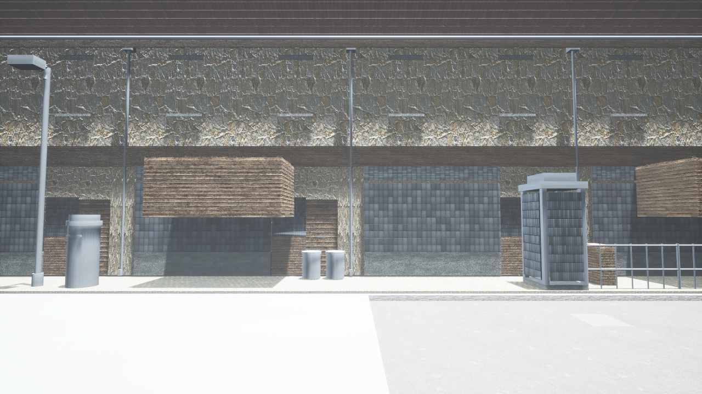

A0_ground_planes
The carriageway and footway themselves: two ground planes at different levels, with road camber falling to the gutter
Availability: source route GENERATE; usable file not established
Suitability: usable for spatial blockout only
Integration: unverified for this design
Road and footways are visibly continuous in the retained walk frames and their dimensions are explicit in source JSON. Usable for preserving spatial blockout; finished surface quality is assessed separately.
Picture: retained game frame, assembly context
Placements: Existing placements remain owned by source scene. No placement added here.
Variant: Keep Hook brick/maroon; alter age, repair and finish deliberately for other districts. No random dressing.
State: No automatic binding. Weather, visibility and damage need a separate authored state policy.
Engine: Not verified for atlas-01. Retained source frames are earlier evidence only.
Source primitive entries: 9. Related BOM: A0_ground_planes